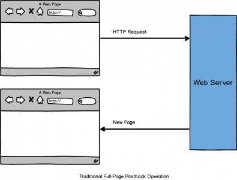
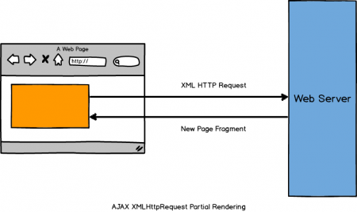
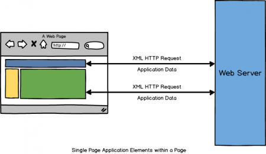
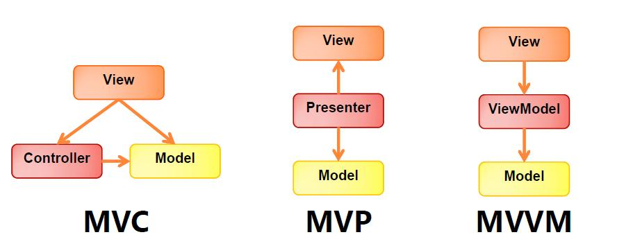
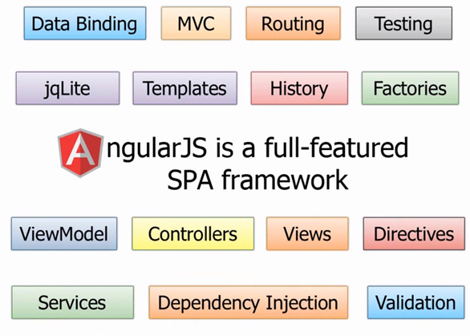
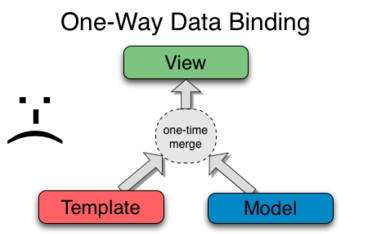
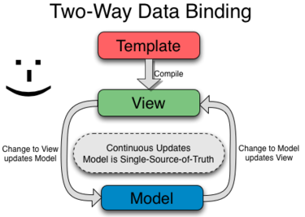

Day 4 Angular.js
Superheroic JavaScript MVW Framework
Workshop Home Page
S.P.A
Single Page Applications
Way way back then!

Evolving

Now

Client side driven Apps
Scalability and Manageability
Separation of Concerns

Enter ng
Angular.js
What Angular.js is NOT
A Javascript library
What Angular.js is NOT
A Two-Way Data binding library

And then people do this inside a controller
$('myelement').css({
position : absolute,
left : 100
});
What is Angularjs?
ng
- AngularJS — Superheroic JavaScript MVW Framework
- A complete client-side solution
- Angular is what HTML would have been had it been designed for application
- A presentation driven framework, if you may
ng Components

M.V.C

One-way Data binding

Two-way Data binding

Angular.js Programatic Structure
Angular.js Application Flow
source
{kind=link}
Hands On
Debugging
AngularJS Batarang
angularjs.org
01.setupProject a.k.a Angular-i-fy
- Step 1 : Bower/Refer/Download Angular.js
- Step 2 : Add
ng-app - Step 3 : Define
ng-appin js
Angular.js app needs to be hosted (localhost)
01.setupProject cont..
Dependency Management : bower
$ [sudo] npm i -g bower$ bower initbower.json
{
"name": "01.setupProject",
"version": "0.1.0",
"homepage": "https://github.com/arvindr21/MEAN-Workshop",
"authors": [
"Arvind Ravulavaru"
],
"license": "MIT",
"ignore": [
"**/.*",
"node_modules",
"bower_components",
"libs",
"test",
"tests"
]
}01.setupProject cont..
Add a
.bowerrc file (bower config)[Optional]
{
directory: "libs"
}
$ bower install angular --saveProject Structure
.
|-- libs
| `-- angular
| `-- /// other files
| `-- angular.min.js
|-- .bowerrc
|-- bower.json01.setupProject cont..
Bower reference - index.html [During Development]
<!DOCTYPE html>
<html>
<head>
My App
<script type="text/javascript" src="libs/angular/angular.min.js"></script>
</head>
<body>
My App
</body>
</html>01.setupProject cont..
CDN Reference - index.html [In Production]
<!DOCTYPE html>
<html>
<head>
My App
<script type="text/javascript" src="https://ajax.googleapis.com/ajax/libs/angularjs/1.2.23/angular.min.js"></script>
</head>
<body>
My App
</body>
</html>01.setupProject cont..
Add angular App
<!DOCTYPE html>
<html ng-app="myApp"> // <-- ngApp
<head>
My App
<script type="text/javascript" src="libs/angular/angular.min.js"></script>
</head>
<body>
My App
<script type="text/javascript">
var myApp = angular.module('myApp', []); // no dependency -> [] is mandatory!
</script>
</body>
</html>01.setupProject cont..
Launch the App
python Server *AMP Server Connect Server 01.setupProject cont..
Launch the App - python
Windows
> python -m http.server*Nix
$ python -m SimpleHTTPServerLaunch
http://localhost:8000
01.setupProject cont..
Launch the App - *AMP
Dump the code into the *www* folder
Launch
http://localhost:port/foldername
01.setupProject cont..
Launch the App - Connect
- Create a
package.json - Install
gulpglobally
[sudo] npm i -g gulp- Install gulp dependencies
npm install gulp gulp-connect --save01.setupProject cont..
Launch the App - Connect
gulpfile.js
var gulp = require('gulp'),
connect = require('gulp-connect');
var paths = {
app : './',
src : './*.html'
};
gulp.task('connect', function() {
connect.server({
root: paths.app,
livereload: true
});
});
gulp.task('html', function() {
gulp.src(paths.src)
.pipe(connect.reload());
});
gulp.task('watch', function() {
gulp.watch([paths.src], ['html']);
});
gulp.task('default', ['connect', 'watch']);
http://localhost:8080
Code Cleanup
Move scripts in index.html to js/app.js
Refer app.js in index.html
Add Bootstrap bower install bootstrap --save
Refer Bootstrap CSS in index.html
Model Bindings
02.modelBinding
- Angular uses HTML markups as templates
- Dynamic values are represented with
{{ variable }} - Values inside
{{ variable }}get resolved at runtime from$scope
02.modelBinding cont..
index.html
My favorite movie is {{movieName}}!!
Launch
$ gulpControllers
Controllers
In Angular, a Controller is a JavaScript constructor function that is used to augment the Angular Scope.
Controllers
- When a Controller is attached to the DOM via the
ng-controllerdirective, Angular will instantiate a new Controller object, using the specified Controller's constructor function - A new child scope will be available as an injectable parameter to the Controller's constructor function as
$scope.
Use Controllers to
- Set up the initial state of the
$scopeobject. - Add behavior to the
$scopeobject.
DO NOT Use Controllers to
- Manipulate DOM — Controllers should contain only business logic.
- Putting any presentation logic into Controllers significantly affects its testability
- Angular has databinding for most cases and directives to encapsulate manual DOM manipulation.
DO NOT Use Controllers to
- Format input — Use angular form controls instead.
- Filter output — Use angular filters instead.
- Share code or state across controllers — Use angular services instead.
- Manage the life-cycle of other components (for example, to create service instances).
Setup Scope
var myApp = angular.module('myApp',[]);
myApp.controller('GreetingController', ['$scope', function($scope) {
$scope.greeting = 'Hola!';
}]);
{{ greeting }}
Directives
Directives
At a high level, directives are markers on a DOM element (such as an attribute, element name, or CSS class) that tell AngularJS’s HTML compiler ($compile) to attach a specified behavior to that DOM element or even transform the DOM element and its children.
Directives
Example :
ng-app ng-model ng-controller ng-repeat ...
Directives
Add
Behavior
Data Binding scope
Replace or extend the HTML Element
Directives
Execution Flow
- Detect the directive
ng-model - Call the
$compilemethod on the directive - Bind directive with
$scope - Render the generated
DOM
ng-repeat
ng-repeat
Repeaters are “for loops”. We define a list in the Angular scope & then iterate the list using a ng-repeat directive & display the data.
ng-repeat
app.js
myApp.controller("HomeCtrl", function($scope) {
$scope.movies = [{
"id": 0,
"name": "Iron Man",
"rating": 5,
"availability": 9,
"review": "Tony Stark is a billionaire industrialist and genius inventor who is kidnapped and forced to build a devastating weapon. Instead, using his intelligence and ingenuity, Tony builds a high-tech suit of armor and escapes captivity. When he uncovers a nefarious plot with global implications, he dons his powerful armor and vows to protect the world as Iron Man. (Paramount Pictures, Marvel Studios)",
"thumb": "http://upload.wikimedia.org/wikipedia/en/e/e0/Iron_Man_bleeding_edge.jpg"
}, {
"id": 1,
"name": "Jurassic Park",
"rating": 5,
"availability": 3,
"review": "Featuring incredible special effects and action - packed drama, Jurassic Park takes you to a remote island where an amazing theme park with living dinosaurs is about to turn deadly, as five people must battle to survive among the prehistoric predators.(Universal Pictures)",
"thumb": "http://upload.wikimedia.org/wikipedia/en/e/e7/Jurassic_Park_poster.jpg"
}, {
"id": 2,
"name": "Transformers",
"rating": 5,
"availability": 5,
"review": "Transformers: Dark of the Moon features Sam Witwicky taking his first tenuous steps into adulthood while remaining a reluctant human ally of Optimus Prime. The film centers around the space race between the U.S.S.R. and the USA, suggesting there was a hidden Transformers role in it all that remains one of the planet's most dangerous secrets. The villain of the third film will be Shockwave. (DreamWorks Pictures)",
"thumb": "http://upload.wikimedia.org/wikipedia/en/6/66/Transformers07.jpg"
}];
});ng-repeat cont..
index.html.
<body class="container" ng-controller="HomeCtrl">
My App
Movies
-
{{movie.id}} - {{movie.name}} - {{movie.rating}}
</body>$ gulphttp://localhost:8080
Filters
Filters
A filter formats the value of an expression for display to the user.
Simple Filter
Print JSON
Prints movies from app.js present in scope
Print JSON
<pre>{{ movies | json }}</pre>Simple Filter
Upper Case
Prints movie names as uppercase
-
{{movie.id}} - {{movie.name | uppercase}} - {{movie.rating}}
Orderby Filter
-
{{movie.id}} - {{movie.name | uppercase}} - {{movie.rating}}
Search Data
-
{{movie.id}} - {{movie.name | uppercase}} - {{movie.rating}}
Scope Functions
Scope Functions
app.js
var myApp = angular.module('myApp', []);
myApp.controller("HomeCtrl", function($scope) {
$scope.currMovie = null;
$scope.getMovieById = function(id) {
var movies = $scope.movies;
for (var i = 0; i < movies.length; i++) {
var movie = $scope.movies[i];
if (movie.id == id) {
$scope.currMovie = movie;
}
}
};
$scope.movies = [{
"id": 0,
"name": "Iron Man",
"rating": 5,
"availability": 9,
"review": "Tony Stark is a billionaire industrialist and genius inventor who is kidnapped and forced to build a devastating weapon. Instead, using his intelligence and ingenuity, Tony builds a high-tech suit of armor and escapes captivity. When he uncovers a nefarious plot with global implications, he dons his powerful armor and vows to protect the world as Iron Man. (Paramount Pictures, Marvel Studios)",
"thumb": "http://upload.wikimedia.org/wikipedia/en/e/e0/Iron_Man_bleeding_edge.jpg"
}, {
"id": 1,
"name": "Jurassic Park",
"rating": 5,
"availability": 3,
"review": "Featuring incredible special effects and action - packed drama, Jurassic Park takes you to a remote island where an amazing theme park with living dinosaurs is about to turn deadly, as five people must battle to survive among the prehistoric predators.(Universal Pictures)",
"thumb": "http://upload.wikimedia.org/wikipedia/en/e/e7/Jurassic_Park_poster.jpg"
}, {
"id": 2,
"name": "Transformers",
"rating": 5,
"availability": 5,
"review": "Transformers: Dark of the Moon features Sam Witwicky taking his first tenuous steps into adulthood while remaining a reluctant human ally of Optimus Prime. The film centers around the space race between the U.S.S.R. and the USA, suggesting there was a hidden Transformers role in it all that remains one of the planet's most dangerous secrets. The villain of the third film will be Shockwave. (DreamWorks Pictures)",
"thumb": "http://upload.wikimedia.org/wikipedia/en/6/66/Transformers07.jpg"
}];
});Scope Functions
index.html
-
{{movie.name | uppercase}}
Availability
ng-include
ng-include
- Create a folder named
partials - Create a new file named
header.html - Add reference to
header.htmlinsideindex.html
Routers
Routers
Manages routes on your client side
- Refer
angular-route.min.jsinindex.html- Option 1 : Download from code.angularjs.org
- Option 2 : Bower
bower i --save angular-route
Routers
Configure routes in
app.js
var myApp = angular.module('myApp', ['ngRoute']);
myApp.config(function($routeProvider) {
$routeProvider
.when('/', {
templateUrl: 'partials/home.html',
controller: 'HomeCtrl'
}).when('/movie/:id', {
templateUrl: 'partials/movie.html',
controller: 'movieDetailsController'
}).otherwise({
redirectTo: '/'
});
});
Routers
controllers.js
myApp.controller("HomeCtrl", function($rootScope, $scope) {
$rootScope.currMovie = null;
$rootScope.getMovieById = function(id) {
var movies = $scope.movies;
for (var i = 0; i < movies.length; i++) {
var movie = $scope.movies[i];
if (movie.id == id) {
$rootScope.currMovie = movie;
}
}
};
$scope.movies = [{
"id": 0,
"name": "Iron Man",
"rating": 5,
"availability": 9,
"review": "Tony Stark is a billionaire industrialist and genius inventor who is kidnapped and forced to build a devastating weapon. Instead, using his intelligence and ingenuity, Tony builds a high-tech suit of armor and escapes captivity. When he uncovers a nefarious plot with global implications, he dons his powerful armor and vows to protect the world as Iron Man. (Paramount Pictures, Marvel Studios)",
"thumb": "http://upload.wikimedia.org/wikipedia/en/e/e0/Iron_Man_bleeding_edge.jpg"
}, {
"id": 1,
"name": "Jurassic Park",
"rating": 5,
"availability": 3,
"review": "Featuring incredible special effects and action - packed drama, Jurassic Park takes you to a remote island where an amazing theme park with living dinosaurs is about to turn deadly, as five people must battle to survive among the prehistoric predators.(Universal Pictures)",
"thumb": "http://upload.wikimedia.org/wikipedia/en/e/e7/Jurassic_Park_poster.jpg"
}, {
"id": 2,
"name": "Transformers",
"rating": 5,
"availability": 5,
"review": "Transformers: Dark of the Moon features Sam Witwicky taking his first tenuous steps into adulthood while remaining a reluctant human ally of Optimus Prime. The film centers around the space race between the U.S.S.R. and the USA, suggesting there was a hidden Transformers role in it all that remains one of the planet's most dangerous secrets. The villain of the third film will be Shockwave. (DreamWorks Pictures)",
"thumb": "http://upload.wikimedia.org/wikipedia/en/6/66/Transformers07.jpg"
}];
});
myApp.controller("movieDetailsController", function($scope, $routeParams) {
$scope.getMovieById($routeParams.id);
});
Routers
Updated
index.html
<html ng-app="myApp">
<head>
<title>My App
<link rel="stylesheet" type="text/css" href="libs\bootstrap\dist\css\bootstrap.min.css"></link>
<script type="text/javascript" src="libs/angular/angular.min.js"></script>
<script type="text/javascript" src="libs/angular-route/angular-route.min.js"></script>
<script type="text/javascript" src="js/app.js"></script>
<script type="text/javascript" src="js/controllers.js"></script>
</head>
<body class="container">
</body>
</html>
</pre>
Routers
Updated
home.html
Routers
Updated
movie.html
{{currMovie.name}}

Review
$ gulphttp://localhost:8080
Services
Express.js + Angular.js
Services
- Step 1 : Scaffold an Express.js app and Install dependencies
- Step 2 : Code server side to dispatch data for a
getendpoint - Step 3 : Add bower support
- Step 4 : Download Angular.js and its dependencies via Bower
- Step 5 : Write Angular.js service to connect with server and render the data
Services cont..
Step 1 : Scaffold an Express.js app
$ express myApp -e$ cd myApp && npm i Services cont..
Step 2 : Code server side get endpoint
routes/index.js
var express = require('express');
var router = express.Router();
/* GET home page. */
router.get('/', function(req, res) {
res.render('index', { title: 'Express' });
});
router.get('/data', function(req, res) {
res.json(require('../data/movies'));
});
module.exports = router;
Services cont..
Step 2 : Code server side get endpoint
data/movies.json
[{
"id": 0,
"name": "Iron Man",
"rating": 5,
"availability": 9,
"review": "Tony Stark is a billionaire industrialist and genius inventor who is kidnapped and forced to build a devastating weapon. Instead, using his intelligence and ingenuity, Tony builds a high-tech suit of armor and escapes captivity. When he uncovers a nefarious plot with global implications, he dons his powerful armor and vows to protect the world as Iron Man. (Paramount Pictures, Marvel Studios)",
"thumb": "http://upload.wikimedia.org/wikipedia/en/e/e0/Iron_Man_bleeding_edge.jpg"
}, {
"id": 1,
"name": "Jurassic Park",
"rating": 5,
"availability": 3,
"review": "Featuring incredible special effects and action - packed drama, Jurassic Park takes you to a remote island where an amazing theme park with living dinosaurs is about to turn deadly, as five people must battle to survive among the prehistoric predators.(Universal Pictures)",
"thumb": "http://upload.wikimedia.org/wikipedia/en/e/e7/Jurassic_Park_poster.jpg"
}, {
"id": 2,
"name": "Transformers",
"rating": 5,
"availability": 5,
"review": "Transformers: Dark of the Moon features Sam Witwicky taking his first tenuous steps into adulthood while remaining a reluctant human ally of Optimus Prime. The film centers around the space race between the U.S.S.R. and the USA, suggesting there was a hidden Transformers role in it all that remains one of the planet's most dangerous secrets. The villain of the third film will be Shockwave. (DreamWorks Pictures)",
"thumb": "http://upload.wikimedia.org/wikipedia/en/6/66/Transformers07.jpg"
}, {
"id": 3,
"name": "Avatar",
"rating": 4,
"availability": 3,
"review": "Jake Sully is a former Marine confined to a wheelchair. But despite his broken body, Jake is still a warrior at heart. He is recruited to travel light years to the human outpost on Pandora, where a corporate consortium is mining a rare mineral that is the key to solving Earth's energy crisis. Because Pandora's atmosphere is toxic, they have created the Avatar Program, in which human drivers have their consciousness linked to an avatar, a remotely-controlled biological body that can survive in the lethal air. These avatars are genetically engineered hybrids of human DNA mixed with DNA from the natives of Pandora... the Na'vi. Reborn in his avatar form, Jake can walk again. He is given a mission to infiltrate the Na'vi, who have become a major obstacle to mining the precious ore. But a beautiful Na'vi female, Neytiri, saves Jake's life, and this changes everything. Jake is taken in by her clan, and learns to become one of them, which involves many tests and adventures. As Jake's relationship with his reluctant teacher Neytiri deepens, he learns to respect the Na'vi way and finally takes his place among them. Soon he will face the ultimate test as he leads them in an epic battle that will decide the fate of an entire world. (20th Century Fox)",
"thumb": "http://upload.wikimedia.org/wikipedia/en/b/b0/Avatar-Teaser-Poster.jpg"
}, {
"id": 4,
"name": "The Incredible Hulk",
"rating": 5,
"availability": 18,
"review": " The Incredible Hulk kicks off an all-new, explosive and action-packed epic of one of the most popular Super Heroes of all time. In the film, scientist Bruce Banner desperately hunts for a cure to the gamma radiation that poisoned his cells and unleashes the unbridled force of rage within him: The Hulk. Living in the shadows—cut off form a life he knew and the woman he loves, Betty Ross—Banner struggles to avoid the obsessive pursuit of his nemesis, General Thunderbolt Ross and the military machinery that seeks to capture him and brutally exploit his power. As all three grapple with the secrets that led to The Hulk’s creation, they are confronted with a monstrous new adversary known as the Abomination, whose destructive strength exceeds even The Hulk’s own. (Universal Studios)",
"thumb": "http://upload.wikimedia.org/wikipedia/en/8/88/The_Incredible_Hulk_poster.jpg"
}, {
"id": 5,
"name": "X-Men",
"rating": 4,
"availability": 0,
"review": " Dr. Charles Xavier gathers children from all over the planet who were born with an added twist to their genetic code. Known as the X - factor these children can perform extraordinary feats. Dr. Xavier calls them his X-Men.",
"thumb": "http://upload.wikimedia.org/wikipedia/en/8/8c/XMen1poster.jpg"
}, {
"id": 6,
"name": "RoboCop",
"rating": 3,
"availability": 6,
"review": " The year is 2028 and multinational conglomerate OmniCorp is at the center of robot technology. Overseas, their drones have been used by the military for years, but have been forbidden for law enforcement in America. Now OmniCorp wants to bring their controversial technology to the home front, and they see a golden opportunity to do it. When Alex Murphy (Joel Kinnaman) – a loving husband, father and good cop doing his best to stem the tide of crime and corruption in Detroit – is critically injured, OmniCorp sees their chance to build a part-man, part-robot police officer. OmniCorp envisions a RoboCop in every city and even more billions for their shareholders, but they never counted on one thing: there is still a man inside the machine.",
"thumb": "http://upload.wikimedia.org/wikipedia/en/b/b1/Robocop_poster.jpg"
}, {
"id": 7,
"name": "Godzilla (I)",
"rating": 3,
"availability": 2,
"review": " Godzilla does Manhattan in this variation on the Japanese A-bomb monster movie classic.",
"thumb": "http://upload.wikimedia.org/wikipedia/en/2/2e/Godzilla_%281998_Movie_Poster%29.jpg"
}, {
"id": 8,
"name": "Hollow Man",
"rating": 3,
"availability": 6,
"review": " A government scientist (Bacon) discovers how to make people invisible. After a freak accident that makes him slowly disappear, he begins to go insane and seeks revenge on the other scientists on the project.",
"thumb": "http://upload.wikimedia.org/wikipedia/en/e/e1/Poster_Hollow_Man.jpg"
}]
Services cont..
Step 3 : Add bower and configure .bowerrc
$ npm i bower --save.bowerrc{
"directory" : "public/libs"
}Services cont..
Step 4 : Add client side dependencies
$ bower i --save angular angular-route bootstrap
Services cont..
Step 5 : Build the Angular App
/views/index.ejs
<!DOCTYPE html>
<html ng-app="myApp">
<head>
<title>My App
<link rel="stylesheet" type="text/css" href="/libs/bootstrap/dist/css/bootstrap.min.css">
<script type="text/javascript" src="/libs/angular/angular.min.js"></script>
<script type="text/javascript" src="/libs/angular-route/angular-route.min.js"></script>
<script type="text/javascript" src="js/app.js"></script>
<script type="text/javascript" src="js/factory.js"></script>
<script type="text/javascript" src="js/controllers.js"></script>
</head>
<body class="container">
</body>
</html>
Services cont..
Step 5 : Build the Angular App
/public/js/factory.js
myApp.factory('moviesFactory', function($http) {
return {
getData: function() {
return $http.get('/data');
}
}
});
Services cont..
Step 5 : Build the Angular App
/public/js/controllers.js
myApp.controller("HomeCtrl", function($rootScope, $scope, moviesFactory) {
$rootScope.currMovie = null;
$rootScope.getMovieById = function(id) {
var movies = $scope.movies;
for (var i = 0; i < movies.length; i++) {
var movie = $scope.movies[i];
if (movie.id == id) {
$rootScope.currMovie = movie;
}
}
};
moviesFactory.getData().then(function(data) {
$scope.movies = data.data;
})
});
myApp.controller("movieDetailsController", function($scope, $routeParams) {
$scope.getMovieById($routeParams.id);
});
Services cont..
Run the App
$ nodemon bin/wwwhttp://localhost:3000